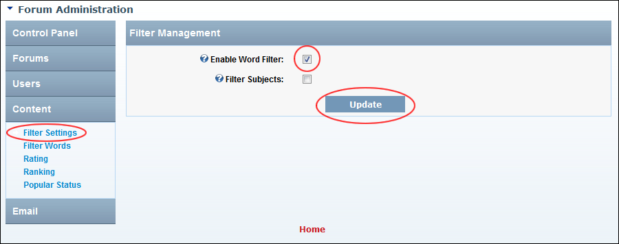

Enabling/Disabling Word Filtering
How to enable or disable the filtering of words in the body of posts, including an option to also filter the subject of posts.
- Go to the Forum Administration page. See "Navigating to the Forum Admin Page"
- In the left-hand panel, select Content > Filter Settings. This displays the Filter Management window.
- At Enable Word Filter, to enable word filtering in post body - OR - to disable. If this option is unchecked, skip to Step 5.
- At Filter Subjects, to enable word filtering in the subject of posts - OR - to disable.
-
Click the Update button.

Enabling Word Filtering